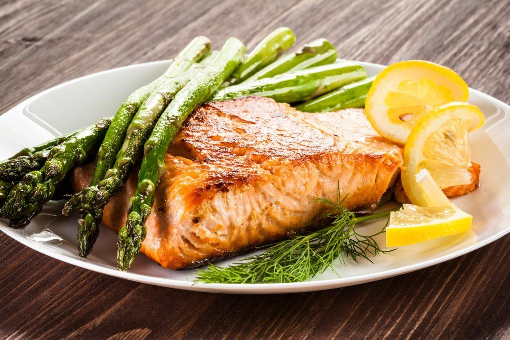

Baked Salmon and Asparagus

Description
Easy and nutritious dinner for too. Gluten-free, low carb.
Serves two people. Preparation time: 35 min.
Ingredients
- Salmon - 500 g
- Asparagus - 500 g
- Half of a lemon
- Olive oil - 2 tbsp
- Salt and Pepper as desired
Steps
- Preheat oven to 425F
- Use medium to a large pot to boil water. Add a big pinch of salt. We will use it later to cook asparagus
- While the water is boiling, wash salmon with cold water and arrange it on a baking sheet. Pat salmon dry with a paper towel
- Cover salmon in salt, pepper, and olive oil
- Put salmon in a preheated oven for 23 mins or until easily flakes and no raw pink inside
- Wash asparagus and cut lightest ends of asparagus (approx. 1-2 inches)
- Put washed asparagus in a boiling pot for 5-10 mins (depending on how thick is asparagus)
- Once everything is ready, divide between plates and squeeze lemon on top of salmon and asparagus
Enjoy!